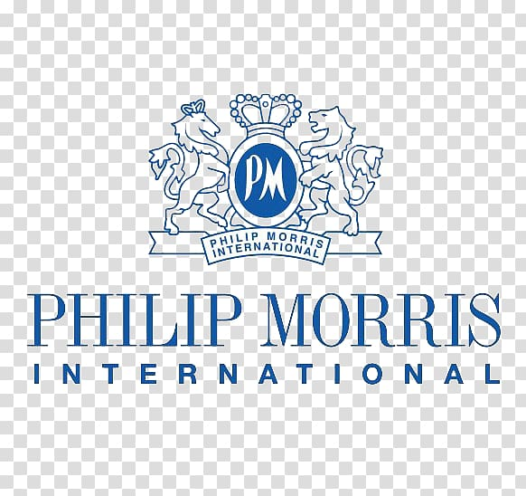
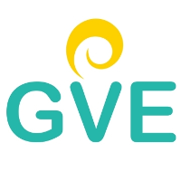
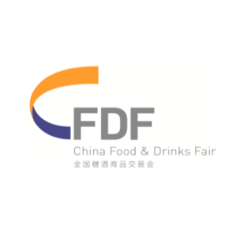
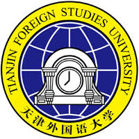
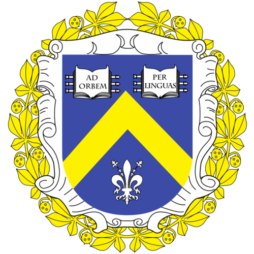

A candidate for a Chinese-taught Master's program in Philology from Nankai
University,
proficient in English and Chineselanguages, Ukrainian and Russian are my mother tongues.
Currently looking for an entry-level internship position in aninternational company or
organization to utilize my strong interpersonal and cross-cultural skills in helping a
company’sgrowth while acquiring new experience at the same time.
Intern
Philip Morris International
Jul 2020 - Aug 2020 (2 months)
Internship program ASPIRE at Philip Morris International.
My responsibilities included:

English Second Language Specialist
GVE Online Education Inc.
Sep 2018 - Dec 2019 (1 year 4 months)

Customer Support Representative
The 101st China Food & Drinks Fair
Oct 2019
 Nankai University
Nankai University
Master's degree, Linguistics
2018 - 2021

Tianjin Foreign Studies University
Chinese Studies
2016 - 2018

Kyiv National Linguistic University
Bachelor's degree, Chinese Language and Literature
2013 - 2018